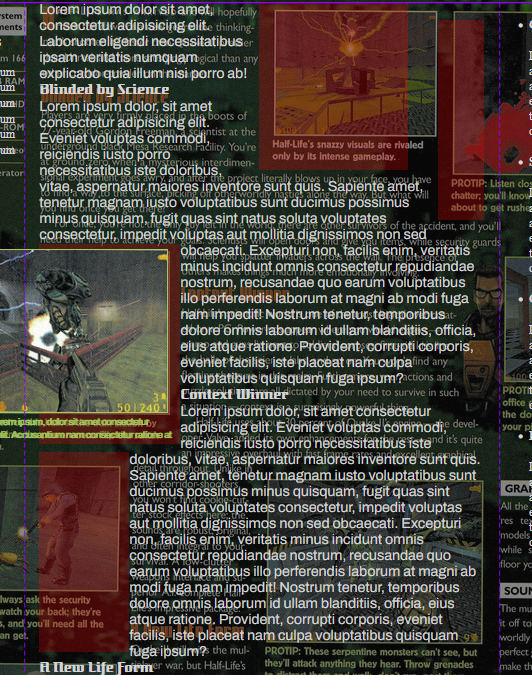

Documentation
Goal
My goal currently was to recreate the source page as perfectly accurate as I could so that I could learn more about CSS. I find that when I delve deep into something, I tend to learn a lot more because I am invested in the final product that I am working towards. Unfortunatly I also had midterms and bug projects like this one for other classes as well and still do so I was not able to hand this in on time. Even still, I put in the effort I expect from myself because I think it is still a valuable experince even if I don't get full credit.
Sources
Magazine PageThis is the source of the half-life magazine page I used. The images from the page are screenshots I took of this source and added the respective borders and such
Background ImageI edited this image to try and make it look similar to the background of the article
GonarchThis is where I got the gonarch from (alien at the bottom of the page)
Annotations and Screenshots

This is the initial annotation of what I planned to do. I followed the layouts somewhat but little did I realize that wrapping the text around all of the images would be much harder than just using floats.
The figures were relatively positioned on top of the document while empty elements served as the areas that the text would wrap around. This image shows the "hitbox" of the image which is just me putting a sem-transparent red background on the "hole" divs (where each space that words wrap around is called a "hole"). Essentially, because of how many different images I had to word wrap, I basically baked in the shape around into empty elements and then in a totally separate area of the document I had the actual figures (image + caption). The reason I had the figures in a different section was to make the html more semantic (which in some cases I had to compromise such as for some reason the article element was weird when trying to size it into a grid cell even if I had it display as a block element). Also in the background you can probably see the reference which I had in the background until the end so I could line things up and get the font sizes right

My plan for the portfolio is to have a header at the top that has links to github, linkedin, etc. as well as my name, maybe an icon, and other relavant small information about me. On the left side I want to make some type of navigation like filtering throuhg projects with tags or just scrolling to it. For the content, I want it to be modularized and standardized where each has some type of media like an image or youtube embed and then a brief description of the project. For the footer I would like to include a bigger summary like an about me section. While the header and navigation would stay on the screen at all times, the footer would not until you scroll all the way down or navigate there using the side bar. I think flex-box would be a good choice for the content boxes and media queries would be good for the header, footer, and possibly side bar (maybe it will get too cramped and need to become a hamburger menu).